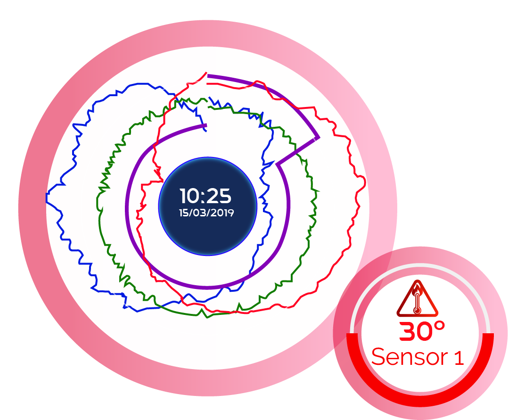

Para lograr la máxima eficiencia energética en sus grandes instalaciones de centros de datos, se lleva tiempo aplicando técnicas de aprendizaje automático e inteligencia artificial. Estas aplicaciones han pasado de ser un medio para emitir recomendaciones a convertirse en un sistema de gestión automatizado capaz de optimizar al máximo los sistemas de refrigeración, ahorrando energía en todo momento.
Este edificio tecnoloógicamente súper avanzado contará con un nuevo sistema de refrigeración bautizado como 'StatePoint liquid Cooling' que la firma sostiene, contribuye a reducir el consumo de electricidad y agua (el consumo de agua se reduce en un 20% con respecto a medios tradicionales).
Sensores de temperatura de salida del aire y software de detección de anomalías térmicas
